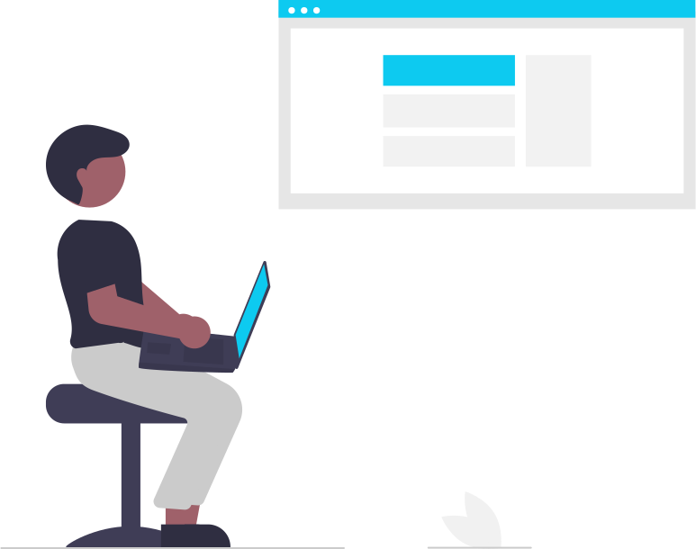
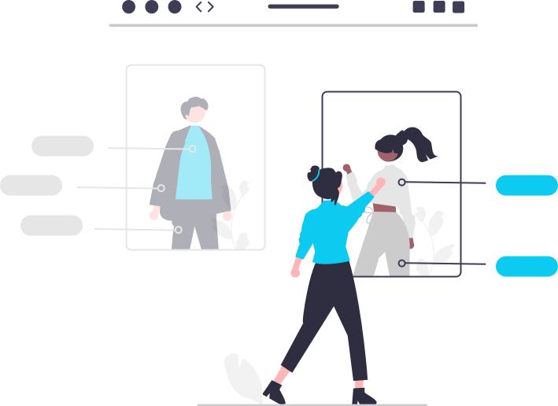

How it works


FAQ
Being a customer-centric fullstack developer means writing code that prioritizes the end-user’s needs. It involves mastering both frontend and backend technologies while ensuring every feature reflects the customer’s voice, solving real-world problems with empathy and precision.
Problem-solving skills are built through practice, critical thinking, and understanding user pain points. Break down complex challenges into manageable parts, experiment with solutions, and leverage tools like debugging and testing to create robust, user-focused applications.
Customer feedback guides development by highlighting what matters most to users. By listening to their needs, you can craft features that resonate, ensuring your code delivers value and fosters trust, making the world better one solution at a time.
Balancing technical expertise with customer-centric design requires aligning your coding skills with user goals. Focus on creating intuitive interfaces, seamless functionality, and scalable solutions that address customer needs while maintaining clean, efficient code.
Collaboration is key to bridging customer needs and smart solutions. Work closely with designers, product managers, and customers to ensure your code not only solves technical challenges but also delivers meaningful, user-driven outcomes that enhance lives.